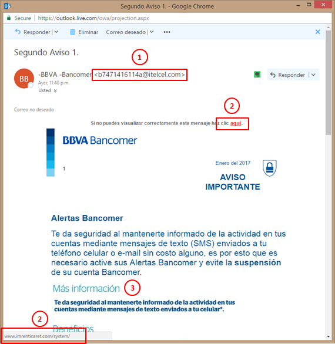
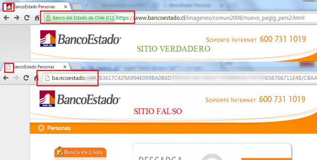

Ingeniería Social
La Ingeniería Social, es el conjunto de técnicas y procedimientos que se llevan a cabo para manipular a las personas, con el objetivo de obtener información valiosa que pueda servir en la ejecución de un Ciberataque. Dicha información es generalmente credencial de acceso a un sistema informático, del cual se tenga interés por la información que determinado sistema pueda poseer. En resumen, se trata de hacer que las personas (usuarios) hagan lo que otra persona (atacante) quiera.
Hoy en día la Ingeniería Social forma parte fundamental de la mayoría de los ataques cibernéticos, ya que es de bajo costo y sencilla de aplicar, como dice el informático y consultor de seguridad, Kevin Mitnick “es mucho más fácil engañar a alguien para que nos dé sus contraseñas que tratar de forzar una entrada a un sistema por medio de un hackeo”.
Existen diferentes técnicas en las que se puede aplicar la ingeniería social, por ejemplo:
Redes Sociales
En la actualidad la tendencia, más común en los jóvenes, es publicar información personal de manera constante. Lugares que frecuentan, donde trabajan, fotos con familiares y gustos personales, son datos que brindan un sólido punto de partida para que un delincuente pueda realizar un ciberataque a cierta persona.
Redes sociales como Facebook o LinkedIn, son perfectas para que delincuentes busquen perfiles de empleados de determinadas empresas, con puestos importantes, para realizar un estudio basado en la información encontrada en sus redes sociales y realizar un plan con el cual se buscara obtener datos de acceso de las cuentas de trabajo donde labora determinada persona.
Farming
Es una forma de engaño hacia una persona por un largo periodo de tiempo. Consiste en ganarse la confianza del usuario y mantenerla por el mayor tiempo posible, se trata de construir una relación basada en la información obtenida de las redes sociales, de esta forma poder sacar la mayor cantidad de datos posibles a la víctima.
Phishing
Es la técnica más simple, consiste en hacerse pasar por el administrador del sistema que se desee atacar, dicho falso administrador solicita a los usuarios sus contraseñas o inclusive números de tarjetas de crédito, argumentando que son requeridas para reconfigurar su cuenta, mejorar el servicio o cualquier otra operación que haga creer al usuario que se trata de una situación real y confiable.
Generalmente con el fin de tener un mayor porcentaje de éxito, el ataque se realiza por medio del envío masivo de correos electrónicos, en el correo se detalla la razón del porque se solicita la información, como se ve en la imagen 1, y los “beneficios” que se obtendrán si es proporcionada, o simplemente en el correo se adjunta un enlace que nos redirigirá a una
página web falsa muy parecida a la del sistema que estamos acostumbrados a utilizar (Banco, empresa de trabajo, redes sociales, etc.).
Al momento de ver dicha página el usuario pensará que es la auténtica y procederá a ingresar la información, por ejemplo: usuario y contraseña, al momento dar clic en “login” o “enviar”, lo redirigirá a la misma página solo que ahora será la auténtica del sistema, el usuario no se dará cuenta de lo que sucedió y procederá a volver a ingresar la información, sin embargo su información ya fue robada en el primer intento.

Imagen 1: Ejemplo de Phishing, solicitando datos personales a través de advertencia del Banco BBVA Bancomer, Autor: Gimer Cervera Fuente: inTechractive.com
Vishing
Se trata de realizar llamadas telefónicas a los usuarios de algún sistema, solicitando información personal, haciéndose pasar por personal representativo de alguna compañía en específico con el fin que parezca una situación legítima.
Baiting
Esta técnica se basa en el uso de dispositivos de almacenamiento portátiles (USB) infectados, dejados en lugares públicos o de fácil acceso, por ejemplo: cafeterías, baños, parques, estacionamientos, etc. Cuando la víctima recoja el dispositivo y lo conecte a su ordenador, un
software malicioso se ejecutará y brindara al atacante un punto de acceso para obtener información personal del usuario.
¿Cómo evitar ser víctima de la Ingeniería Social?
No existe un método que nos proteja al 100%, cualquiera puede ser un objetivo de un ataque de Ingeniería Social. Sin embargo, se pueden seguir los siguientes consejos para no caer fácilmente:
- Antes de ingresar información personal o sensible (contraseñas, cuentas bancarias, número de tarjeta de crédito) en un
sitio web primero cerciorarse que el URL de la página sea correcto y que cuente con certificado de seguridad, como se puede observar en la imagen 2.

Imagen 2: Diferencias entre un sitio web verdadero, con un sitio web falso, Autor: Luis Paus Fuente: WeLiveSecurity
No anotar en ningún lugar información de acceso a un sistema, uno de los errores que se cometen en oficinas es que para no olvidar contraseñas se anotan en blocs de notas y son pegados en lugares visibles, lo cual termina siendo un gran riesgo debido a que dicha información puede ser recolectada por algún intruso y ser utilizada con fines delictivos.
Mantenerse informado sobre los métodos que son utilizados en los ataques de Ingeniería Social, de este modo estar atentos y no brindar ningún tipo de información a las personas equivocadas.
Evitar publicar constantemente aspectos de nuestra rutina diaria en las redes sociales, ya que puede servir como información para un ataque en nuestra contra.
Usar el sentido común nos puede salvar en muchas ocasiones, y si notamos que algo anda mal en cuanto a la seguridad de nuestra información, es muy probable que se trate de un intento de robo de datos.
No brindar ningún tipo de información personal que nos pidan por teléfono sin importar que sea para nuestra compañía de telefonía, energía eléctrica, bancos, etcetera. Ya que se puede tratar de un intento de robo de información. Verificar bien los números telefónicos y solo usar los números oficiales de las compañías.
No dejar que la curiosidad nos gane, evitar conectar dispositivos de almacenamiento extraíble que nos podamos encontrar tirados en algún lugar público, ya que pueden contener
software malicioso, el cual pueden robar nuestra información personal.

{kind=link}
{kind=link}